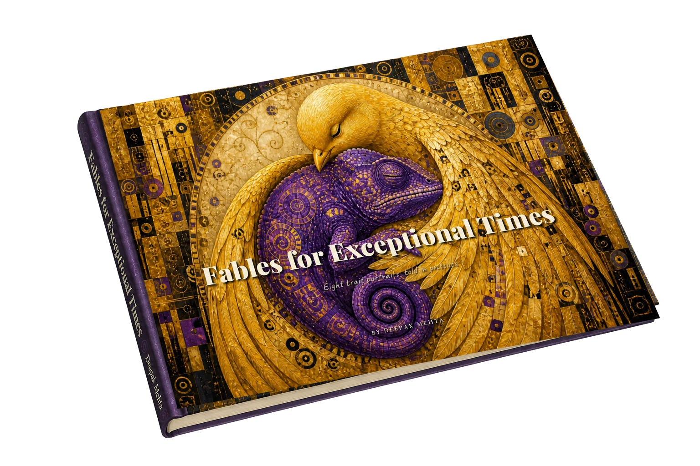

Eight trait portraits, told in pictures.
by Deepak Mehta

Some capabilities only become visible when the system around them breaks.
Fables for Exceptional Times is a collection of eight fables, each built around a distinct way of thinking that stable, well-ordered environments tend to overlook, misfile, or actively penalise. A crow who cannot stop connecting what shouldn’t be connected. A fox who commits to a direction before the map is finished — and six more, each finding what only pressure makes visible.
The book you see above exists. Everything below is still forming — not yet dated, not yet priced.
Ambassador editions are open, but they’re not a giveaway. They’re for people ready to actively help the book reach further — translating it into a local language, finding a publisher, booking a workshop or talk, finding sponsors, or supporting the mission in kind.
In return, ambassadors get early access to the fable book before wider release — and a signed copy for anyone willing to meet Deepak in person.